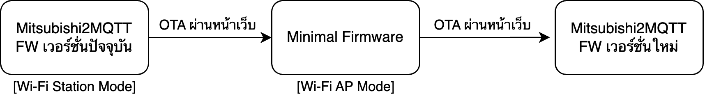

WiFikit Serial / CN105Kit Web Tools
อัปเดตเฟิร์มแวร์โมดูล Wi-Fi WiFikit Serial / CN105Kit ผ่าน Serial ง่ายๆ ผ่าน Browser
Firmware for: Mitsubishi MR.Slim
Current release: Mitsubishi2MQTT - magi's edition 2024.5.1
การดูเวอร์ชั่น Hardware
| รุ่น Hardware | รูป | Variant | Label | USB Serial | USB-C | OTA |
|---|---|---|---|---|---|---|
| V1 |  |
Wemos D1 Mini ESP12E | - | ❌ | ❌ | ✅ |
| V2 |  |
WiFi Serial ESP07 | 
หรืออาจไม่มี Label |
✅ | ❌ | ผ่าน Minimal FW |
| V2.1 | |
WiFi Serial ESP12E | 
|
✅ | ❌ | ✅ |
| WiFiKit Serial |  |
WiFiKit Serial 1.2 (ESP32S3) | 
|
✅ | ✅ | ✅ |
อัปเดตผ่าน USB Serial
ขั้นตอน
สำหรับ CN105Kit
- ปรับสวิตช์บนโมดูล CN105Kit เป็น Flash Mode
- เชื่อมต่อ USB to Serial เข้ากับโมดูล CN105Kit ตามแผนภาพนี้
- เลือกเวอร์ชั่น Hardware ด้านล่างแล้วกดปุ่ม Connect
- เลือก Serial Device และทำตามขั้นตอน
- รอจน flash firmware สำเร็จ และทำการปรับสวิทช์โมดูลไปที่ Normal Mode
การเชื่อมต่อ USB to Serial สำหรับ CN105Kit V2 และ 2.1

วิดีโอ
สำหรับ WiFikit Serial
- ถอดโมดูลออกจากเครื่องปรับอากาศ
- เชื่อมต่อสายจากคอมพิวเตอร์ไปที่ช่อง USB-C ของโมดูล
เลือกเวอร์ชั่น Hardware
-
-
-
อัปเดตผ่าน OTA
ขั้นตอนสำหรับ CN105Kit V1, V2.1 (ESP12-E) และ WiFiKit Serial (ESP32s3)
สามารถอัปเดตไปรุ่นถัดไปได้ทันที
- Download ไฟล์ไฟล์เฟิร์มแวร์ของ Mitsubishi2MQTT เวอร์ชั่นล่าสุด จากที่นี่ (เลือกไฟล์ .bin ตาม hardware ที่ใช้)
- เข้าไปที่หน้าเว็บ config ผ่าน IP Address ของโมดูล
- กด Firmware Update แล้วเลือกไฟล์
.binที่ดาวน์โหลดมา - กด Start upgrade
ขั้นตอนสำหรับ CN105Kit V2 (ESP07) หรือรุ่นที่เจอ Error: File upload buffer miscompare
เนื่องจากชิป ESP07 มีพื้นที่ความจุ 1 MB จึงไม่สามารถอัปโหลด Firmware เวอร์ชั่นใหม่ไปเก็บในบอร์ดได้ ต้องอัปเดตเป็นเฟิร์มแวร์เวอร์ชั่น Minimal ซึ่งใช้พื้นที่น้อยก่อน แล้วจึงค่อย OTA เพื่อ Update เป็นเวอร์ชั่นล่าสุด
- Download ไฟล์ไฟล์เฟิร์มแวร์ของ Mitsubishi2MQTT เวอร์ชั่นล่าสุด จากที่นี่ (เลือกไฟล์ .bin ตาม hardware ที่ใช้)
- Download ไฟล์ไฟล์เฟิร์มแวร์ Minimal สำหรับใช้ OTA จากที่นี่
- เข้าไปที่หน้าเว็บ config ผ่าน IP Address ของโมดูล
- กด Firmware Update แล้วเลือกไฟล์เฟิร์มแวร์ Minimal ที่ดาวน์โหลดมา รอจนการติดตั้งเฟิร์มแวร์ minimal เสร็จสบมูรณ์ (LED กระพริบทุก 1 วินาที)
- เชื่อมต่อ Wi-Fi ของคอมพิวเตอร์ไปที่สัญญาณ Wi-Fi ที่ตัวโมดูลปล่อยออกมา (AP Mode), Wi-Fi ชื่อ
esp8266-webupdate - เข้าไปที่หน้าเว็บสำหรับการอัปเดต:
http://192.168.4.1/update - เลือกเฟิร์มแวร์ Mitsubishi2MQTT ที่ดาวน์โหลดมา แล้วทำการกด Update Firmware
- รอจนเสร็จสิ้น แล้วทำการตั้งค่าโมดูลใหม่
*การตั้งค่าของโมดูลจะสูญหาย โปรดจดชื่อ MQTT Hostname และค่าต่าง ๆ ไว้ก่อน (ยกเว้นรุ่น ESP12-E การตั้งค่ายังอยู่)
**หากฟีเจอร์ใหม่ไม่ปรากฎใน MQTT Integration ให้ทำการลบอุปกรณ์ออกจาก MQTT Integration แล้วทำการ Reboot Module หนึ่งรอบ